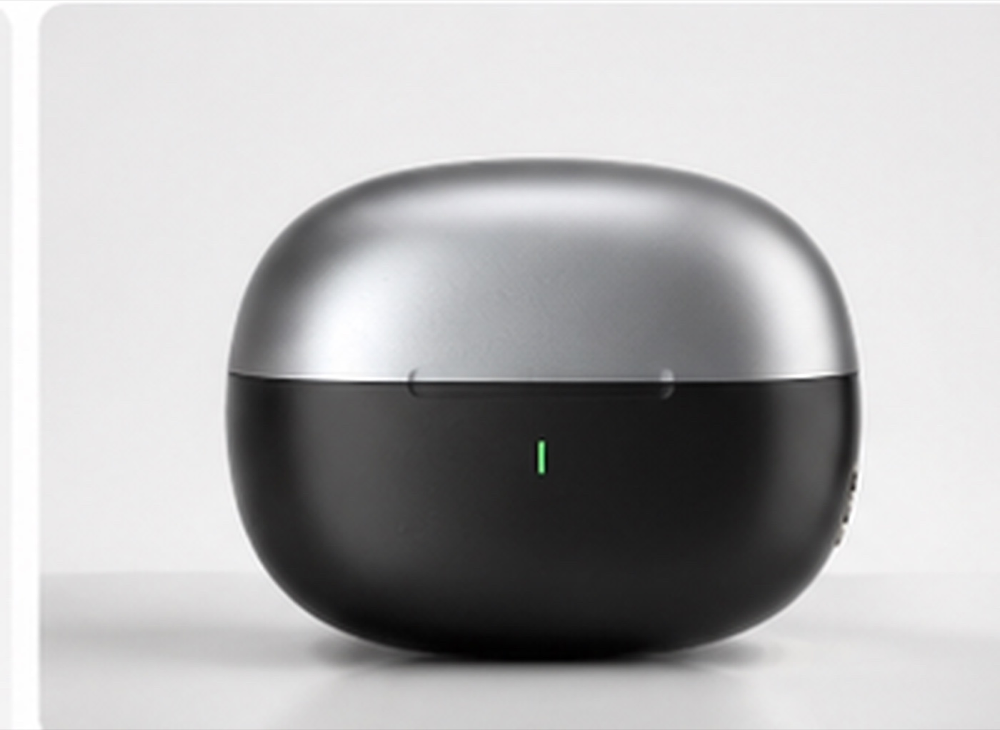
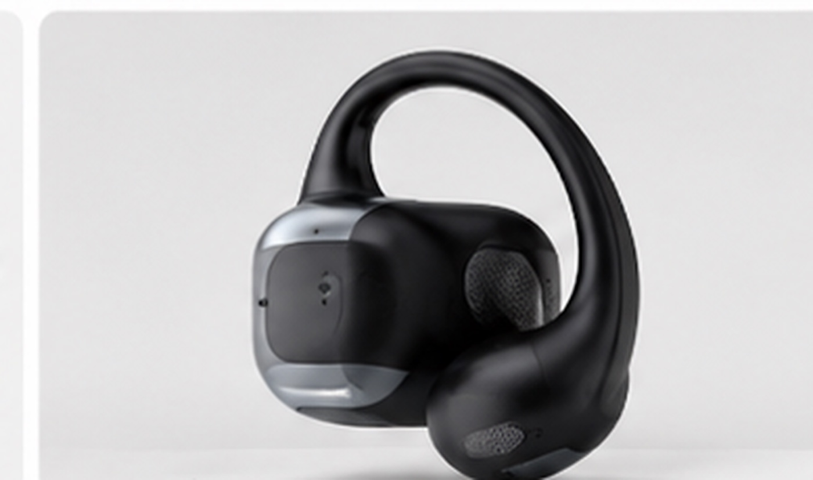
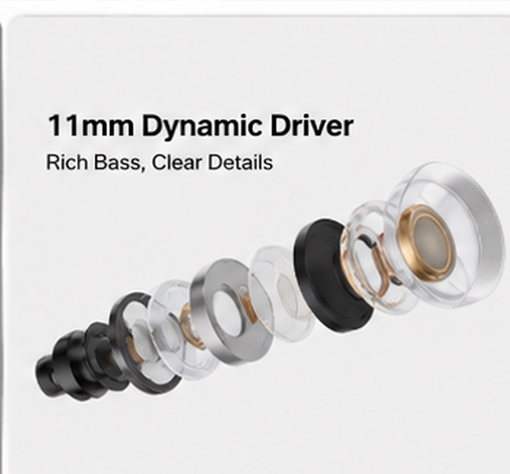
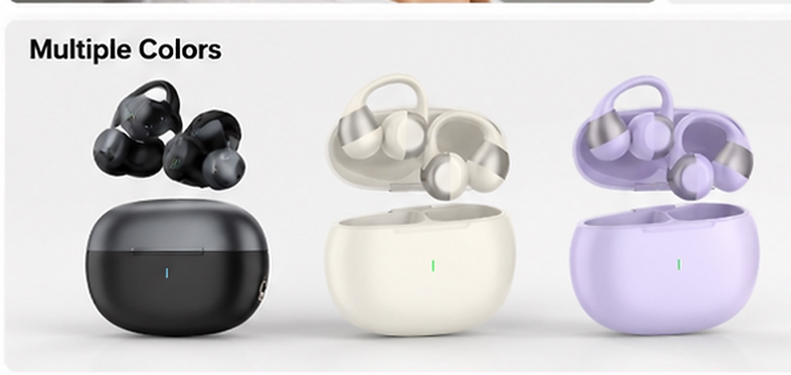

Charging case exterior
Closed-case visual for finish, indicator and compact storage discussion.
Open-ear TWS sample
A clip-style open-ear TWS earbud direction for importers, distributors and private-label teams comparing comfort, charging-case design, color direction, packing list and model-specific sample details.

Product evidence
These supplied visuals help buyers discuss wearing style, color direction, charging case, driver reference and packing-list contents before requesting a physical sample.

Closed-case visual for finish, indicator and compact storage discussion.

Black earbud view for colorway, housing shape and open-ear clip form review.

Closer visual reference for surface finish, wearing contact area and outlet structure.

Driver visual for buyers reviewing the listed acoustic component direction.

Use the packing image as a starting point, then confirm final included items by sample version.

Color direction can be reviewed for private-label range planning and market presentation.
Lifestyle images support positioning discussion for work, commute and outdoor daily-use scenarios.
Buyer notes
Earclip09S is useful when a TWS line needs a different wearing style from standard in-ear earbuds such as TWS044F.
Listed specifications
Use these supplied specifications for initial comparison. Final values should be confirmed against the actual sample and production version.
Sample checklist
Check whether the clip-style form fits the target user profile and long-wear use case.
Review music, voice-call clarity and leakage expectations against the open-ear design.
Confirm finish, hinge, indicator light, contact stability and packaging fit.
Use color visuals to decide whether black, white, purple or other market-specific directions are needed.
Confirm earbuds, charging case, cable, manual language and any optional accessories before artwork.
Share target market, color, branding position, quantity range and document needs for a clearer sample discussion.
Related pages
Sample discussion
Tell us your target market, color direction and packaging questions so we can prepare a clearer TWS sample discussion.